Step-by-Step Guide for the New-user
1) Open as400.
2) Log in with your credentials (user = 1st letter of your first name and 1st 4 letters of your last name) (your password).
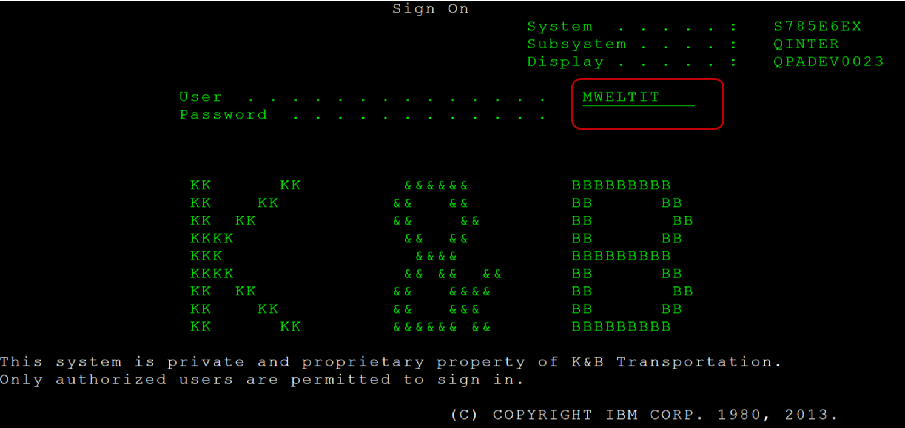
3) Select "1"-> K&B transportation.
4) Select "3" -> K&B Custom Menu.
5) Select "18" IT Operations Menu.
6) Select "3" New Hire Set Up Menu.
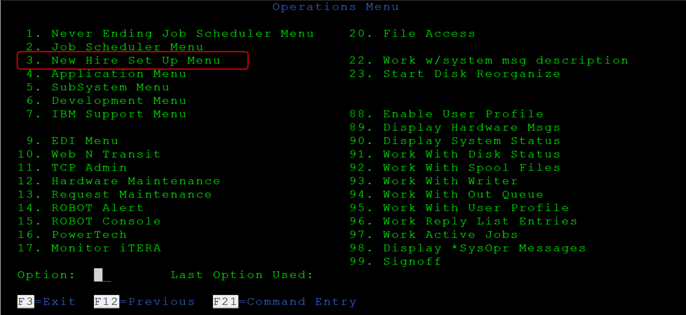
7)Select "1" User Profile.
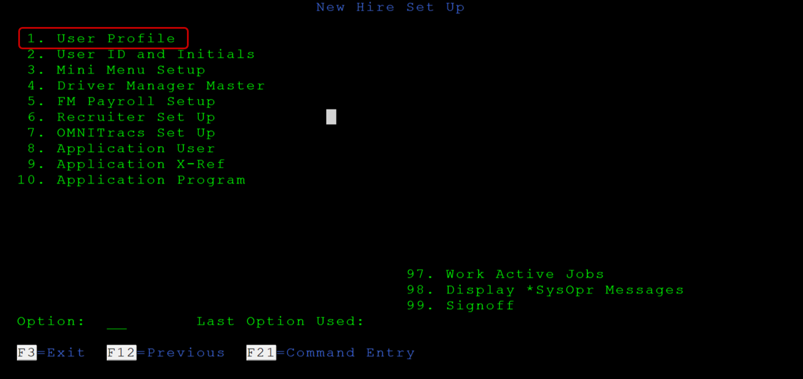
8) Write "ALL".
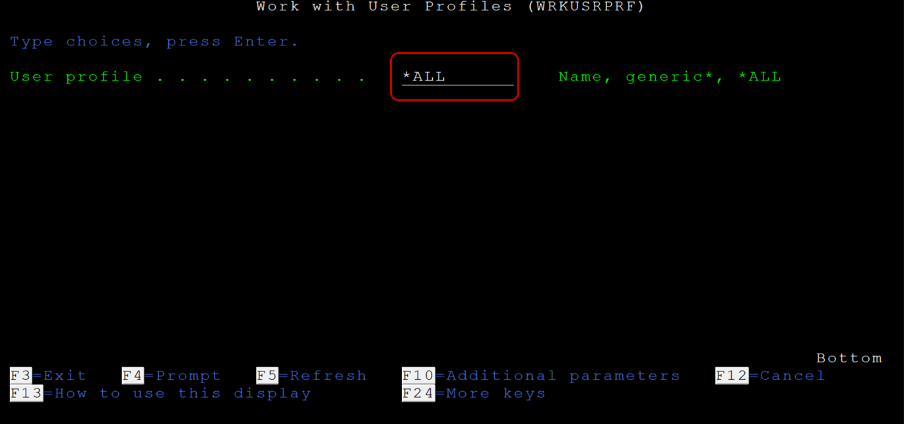
9) Page down to find the specific user to copy IBM | profile from.
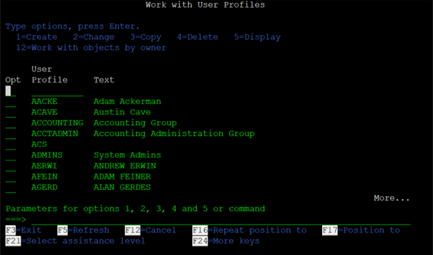
10)Select "3 next to User Profile to copy and press Enter key.
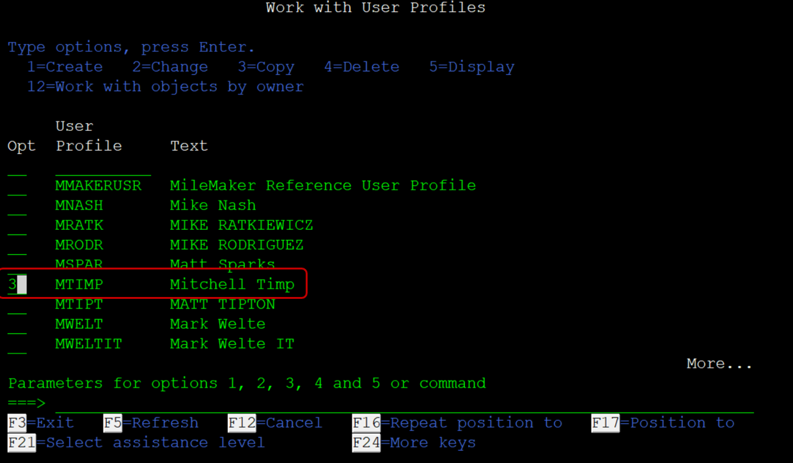
11) Enter the name of the new user profile (first character of first name, first four characters of last name).
Enter first and last name with quotes in "Text description" field.
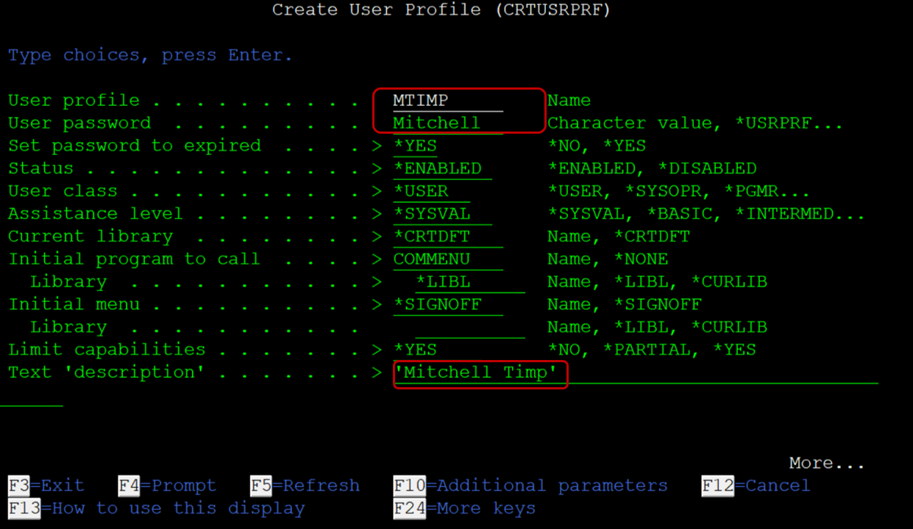
12) Press Enter key to create new IBM (AS400) profile.
After pressing the Enter key, the system returns to the Work with User Profiles screen.
Enter 2 in the Opt field next to the User Profile. Press Enter key.
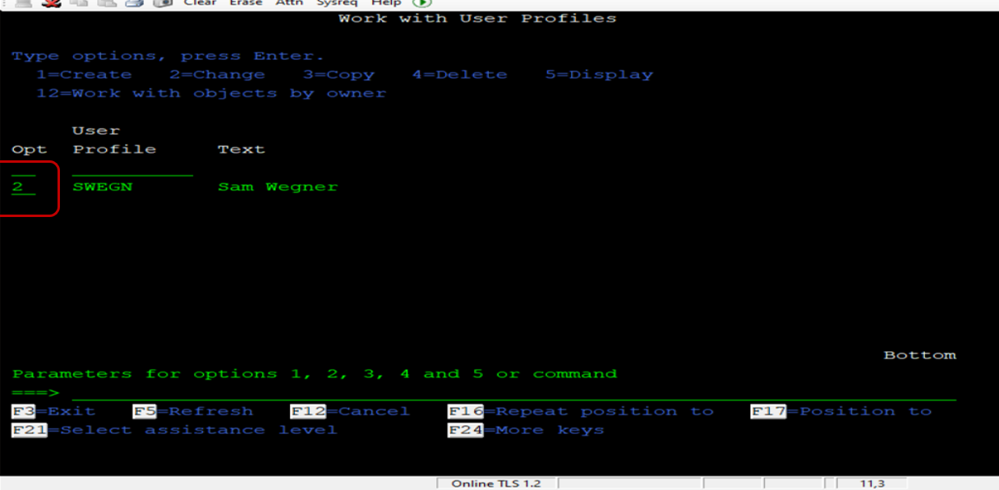
13) Press F10. Page down (five times) to verify information matches that of the copied User Profile.
 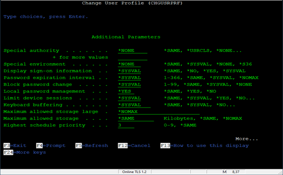
14) Verify Message Queue shows the username.
Verify Library shows QUSRSYS. Page down.
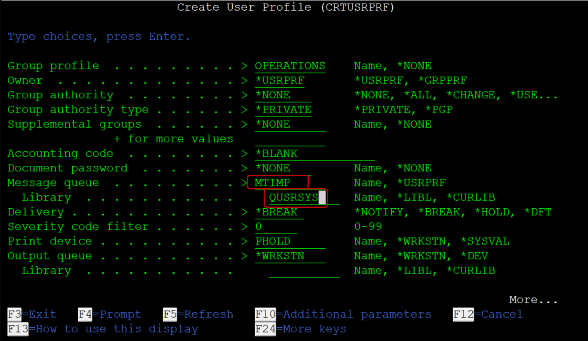
16) No changes. Page down.
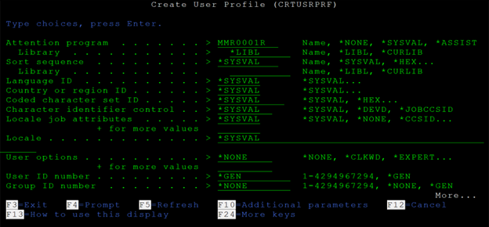
17) No changes. Press Enter key.
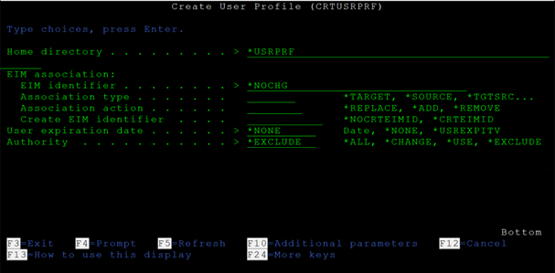
19) Returned to the Work with User Profiles screen
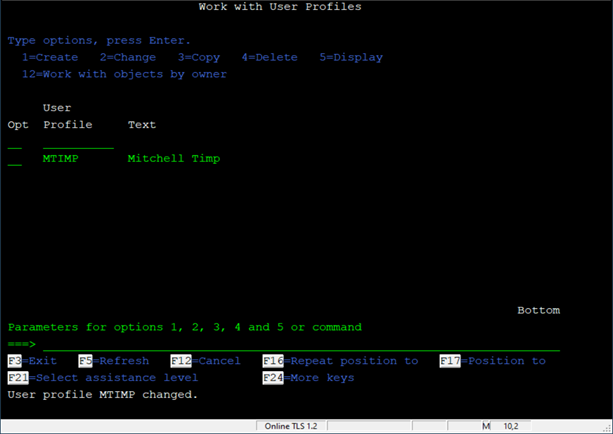
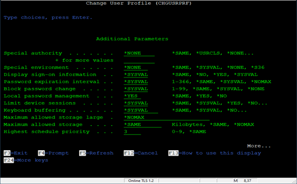
14) Verify Message Queue shows the username.
Verify Library shows QUSRSYS. Page down.
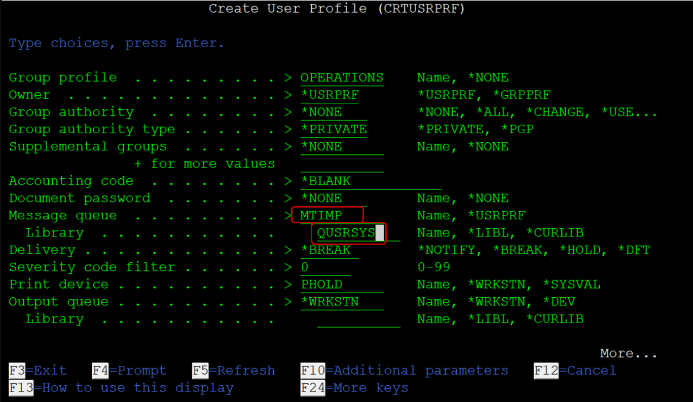
16) No changes. Page down.
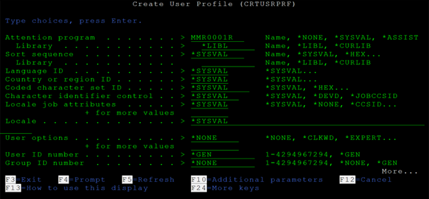
17) No changes. Press Enter key.
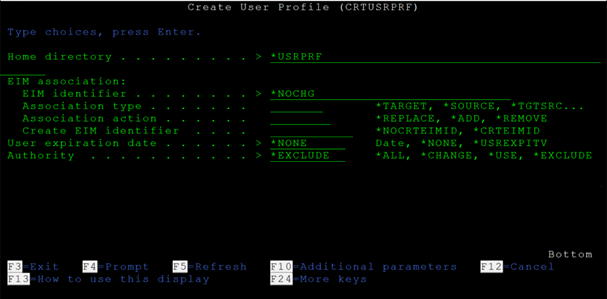
19) Returned to the Work with User Profiles screen
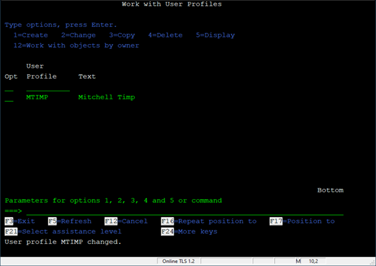
After you did the first steps, now you have to do the setup according to your department: